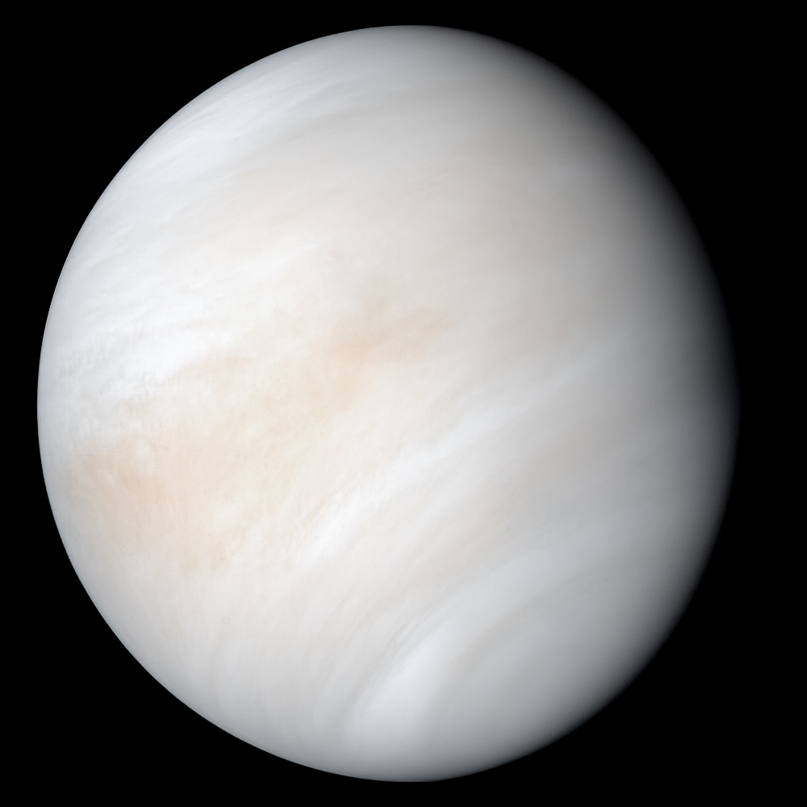

Overview
Venus is the second planet from the Sun. Similar in size and mass to Earth, Venus has no liquid water, and its atmosphere is far thicker and denser than that of any other rocky body in the Solar System. At the mean surface level, the atmosphere reaches a temperature of 737 K and a pressure 92 times greater than Earth's at sea level, turning the lowest layer of the atmosphere into a supercritical fluid.
Physical characteristics
Venus is often described as Earth's sister or twin because of its similar size and mass. It has a diameter of 12,103.6 km, only 638.4 km less than Earth's, and its mass is 81.5% of Earth's, making it the third smallest planet in the Solar System. Its dense atmosphere is 96.5% carbon dioxide, causing an intense greenhouse effect, with most of the remaining 3.5% being nitrogen.
Geography
About 80% of the Venusian surface is covered by smooth volcanic plains. Two highland continents make up the rest of its surface: Ishtar Terra in the north, about the size of Australia, and Aphrodite Terra south of the equator, roughly the size of South America. There is recent evidence of lava flow on Venus, and the planet has few impact craters, showing the surface is relatively young at 300 to 600 million years old.
Internal structure
The similarity in size and density between Venus and Earth suggests they share a similar internal structure of a core, mantle, and crust. Unlike Earth, Venus shows no evidence of plate tectonics, likely because its crust is too strong to subduct without water to make it less viscous. Instead, Venus may lose its internal heat through periodic major resurfacing events.
Magnetic field & Magnetosphere
Venus has a weak magnetosphere. Lacking an internal dynamo, it is induced by the solar wind interacting with the atmosphere. This lack of an intrinsic magnetic field was surprising given Venus's similarity in size to Earth, and may be linked to a lack of convection in its core.
Atmosphere
Venus has a dense atmosphere composed of 96.5% carbon dioxide and 3.5% nitrogen, with traces of other gases including sulphur dioxide. This CO2-rich atmosphere generates the strongest greenhouse effect in the Solar System, creating surface temperatures of at least 735 K, making the Venusian surface hotter than Mercury's despite Venus being much farther from the Sun.
Orbit & Rotation
Venus orbits the Sun at an average distance of about 0.72 AU, completing an orbit every 224.7 days. It has retrograde rotation, meaning it spins clockwise around its own axis, opposite to its motion around the Sun. Its sidereal day, 243 Earth days, lasts longer than a Venusian year.
Moons
Venus has no natural satellites. It has several Trojan asteroids, including the quasi-satellite 524522 Zoozve. A 2006 study suggests Venus likely had at least one moon created by a huge impact billions of years ago, later lost after another impact reversed the planet's spin direction.
Visibility
Venus appears as a white point of light with a maximum apparent magnitude of -4.92, brighter than any other planet or star apart from the Sun. It is a commonly misreported unidentified flying object due to its brightness. Venus overtakes Earth every 584 days, changing from evening star to morning star and back.
Exploration
Venus was visited for the first time in 1961 by Venera 1, which flew past the planet. The Soviet Venera programme achieved the first soft landing on another planet in 1970 with Venera 7. Magellan mapped the surface by radar between 1990 and 1994, and future missions including DAVINCI, VERITAS, and EnVision are planned for the early 2030s.